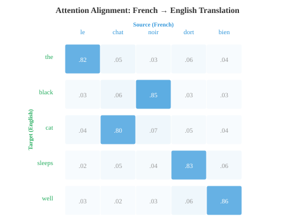
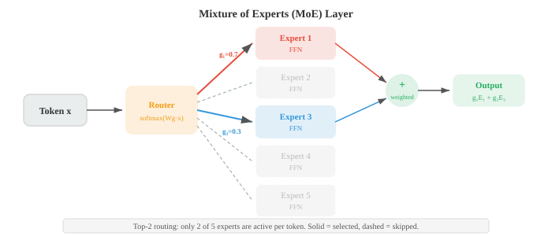

Maths, CS & AI Compendium · Chapter 07
Tokens, Attention, State
This chapter looks, at first glance, like the one with no mechanical content at all. Language is not a material. It has no stiffness, no mass, no conservation law. Nothing here is going to be a beam.
And yet the two architectures that define modern language modelling turn out to be objects you were handed in your second and third years. Attention is a duality pairing — the same structure as virtual work, which Chapter 01 §08 already showed you have been computing since statics. And the state-space model, the architecture that is currently the most credible challenger to the transformer, is the linear state-space system from control theory, discretised by zero-order hold, exactly as you would digitise a controller.
The headline is in §07 and it is worth carrying with you from the start. The convolution kernel of a state-space language model is the discrete impulse response function. Not an analogy. The same sequence of numbers, computed the same way, from \(\bar{K}=(C\bar{B},\,C\bar{A}\bar{B},\,C\bar{A}^2\bar{B},\ldots)\). You have plotted that kernel for a damped oscillator. Mamba plots it for a sentence.
Where this chapter is genuinely foreign, it says so. Tokenisation, the distributional hypothesis and pragmatics have no mechanical counterpart worth forcing, and §11 is blunt about which bridges here are load-bearing and which are decoration.
The bridge
The honest verdict column matters more in this chapter than in any previous one. Several rows are exact; several are merely suggestive; one is here specifically to be shot down.
| What you already know | What NLP calls it | How good is the match? |
|---|---|---|
| State-space form \(\dot{x}=Ax+Bu,\ y=Cx+Du\) | SSM layer (S4, Mamba) | Identical. Same equations, same ZOH discretisation. See §07. |
| Impulse response of a discrete system | SSM convolution kernel \(\bar{K}\) | The same sequence of numbers. See §07. |
| Virtual work \(\delta W=\mathbf{F}\cdot\delta\mathbf{r}\) (Ch 01 §08) | Attention score \(q^{\mathsf T}k\) | Same structure. Query is the ruler. See §05. |
| Plane rotation / Mohr's circle (Ch 01 §07) | RoPE positional encoding | Exact. Same \(2\times2\) rotation, same group property. See §06. |
| Difference equation \(x_k=ax_{k-1}+bu_k\) | Recurrent network (RNN) | Exact, with a nonlinearity inserted. See §04. |
| Fourier series — a signal as summed harmonics | Sinusoidal positional encoding | Same basis, used as an address rather than a decomposition. See §06. |
| Low-rank update to a matrix (Ch 02 §05) | LoRA fine-tuning | Exact. \(W'=W+BA\) with \(r\ll d\). See §08. |
| Assembly-line balancing, idle stations | MoE expert load balancing | Identical problem. See §08. |
| Acceptance sampling with rectification | Speculative decoding | Same accept/reject algebra. See §09. |
| Feature vector with physical components (Ch 01 §02) | Word embedding | Structure yes, meaning no. The axes mean nothing. See §02. |
| Markov chain (Ch 05) | N-gram language model | Exact — it is a Markov chain over words. See §03. |
| Cross-entropy (Ch 05 §05) | Perplexity | Exact identity: \(\mathrm{PPL}=e^{H}\). See §03. |
| Thermodynamic entropy \(S=k\ln W\) | Shannon entropy in NLP | Related, not the same. Do not push this. See §11. |
| A system with a governing equation | A language model | Nothing like it. Language has no conservation law. See §11. |
Every numerical method you have ever used began with a discretisation choice. Before you can solve a beam you must decide what an element is; before you can run an FFT you must choose a sample rate. The choice is not neutral — mesh too coarse and you lose the stress concentration, sample too slowly and you alias.
Tokenisation is that choice, for text. And it is the one step in this chapter with no mechanical counterpart, because the discretisation is not chosen by the engineer from physical reasoning. It is learned from the corpus by counting.
The naive choices both fail. Splitting on whitespace makes “run”, “runs”, “running” and “ran” four unrelated symbols, and cannot handle Chinese, which has no spaces. Splitting into characters handles anything but makes sequences enormously long and forces the model to relearn spelling from scratch.
Byte-pair encoding (BPE) sits between them. Start with characters. Count every adjacent pair. Merge the most frequent pair into a new symbol. Repeat. After a few thousand merges, common words are single tokens and rare words decompose into frequent pieces — a statistical approximation to the morphology of §01 of the source, arrived at without any linguistic input at all.
Each merge replaces every occurrence of one adjacent pair with a single symbol. So each merge reduces the corpus token count by exactly the frequency of the pair it merged, and grows the vocabulary by exactly one. Compression and vocabulary size trade off one-for-one, and the trade is completely explicit. That is the whole algorithm.
The corpus below holds 95 character tokens. You are about to merge the most frequent adjacent pair, which occurs 9 times. After that single merge, the total token count will fall to…
applied
tokens
size
merge
low×5, lower×2,
newest×6, widest×3, each with
an end-of-word marker </w>. Ties in pair frequency are
broken by first appearance. The first two merges reproduce the source chapter's worked
sketch (es, then est); the source
omits the end-of-word marker, which real implementations require to tell
est in “newest” from est
in “estimate”.
A mesh is chosen from the physics: you refine where the gradient is steep, and you can check convergence by refining further and watching the answer stop moving. Tokenisation has no such test. Refining the vocabulary does not converge to a “true” tokenisation, because there is no underlying continuum being approximated. The corpus statistics are the ground truth.
This has a consequence with no mechanical parallel at all: the tokeniser is frozen before pre-training and cannot be changed afterwards without retraining the model. A digit split awkwardly, or a language under-represented in the merge corpus, is a permanent handicap baked into the model's input layer. There is no mesh refinement study available after the fact.

Chapter 01 §02 made the case that a vector is any list of numbers you can add and scale, and that the entries need not be lengths. A state vector holding \((\text{pressure},\ \text{temperature},\ \text{flow rate})\) is a perfectly good vector even though its components carry different units. Word embeddings take that licence to its limit.
The justification is the distributional hypothesis (Firth, 1957): you shall know a word by the company it keeps. Words appearing in similar contexts tend to mean similar things. Make that operational and you get a recipe: assign each word a dense vector, and fit those vectors so that words sharing contexts end up close together.
Word2Vec does this with a deliberately shallow network. Skip-gram takes a word and predicts its neighbours; CBOW averages the neighbours and predicts the word. Training over the whole vocabulary would mean a softmax over \(V\approx10^5\) terms per step, so negative sampling replaces it with binary classification against a handful of random decoys:
That looks like a heuristic, and for a year everyone treated it as one. It is not. Levy and Goldberg (2014) showed that at convergence this objective is implicitly factorising a shifted pointwise-mutual-information matrix:
This is worth pausing on, because it collapses an apparent novelty back into machinery you already have. PMI is an information-theoretic quantity from Chapter 05. Factorising a matrix into a product of two thin ones is the truncated SVD of Chapter 02 §05. So Word2Vec is a low-rank factorisation of a co-occurrence statistic — the same thing classical latent semantic analysis did in the 1990s, reached by a cheaper, online route. GloVe makes the factorisation explicit, fitting \(w_i^{\mathsf T}\tilde{w}_j+b_i+\tilde{b}_j=\log X_{ij}\) against the global co-occurrence count \(X_{ij}\) directly.
The celebrated consequence is that analogies become vector arithmetic: \(v_{\text{king}}-v_{\text{man}}+v_{\text{woman}}\) lands near \(v_{\text{queen}}\). Semantic relations are, approximately, translations — a single displacement vector that carries you from one word to its counterpart, the same displacement wherever in the space you apply it.
A feature vector in mechanics has interpretable axes. The second entry is the temperature; it has a unit, a sign convention, and a meaning independent of the other entries. You can hold one fixed and vary another, and ask a physical question about the result.
An embedding has none of that. Dimension 237 of a 768-dimensional embedding means nothing whatsoever on its own. The space is only defined up to an arbitrary rotation — replace every vector \(v\) by \(Qv\) for any orthogonal \(Q\) and every dot product, hence every prediction, is unchanged. There is no privileged basis, so there is nothing to interpret axis by axis.
What survives rotation is exactly what carries the meaning: lengths, angles, and differences between vectors. This is the one place in this chapter where the right mechanical instinct is the tensor one — care about the invariants, not the components. The analogy result is a statement about displacements, which is why it survives; a claim about “the gender dimension” would not.

FastText patches the biggest practical hole. Word2Vec and GloVe assign vectors to word types, so a word absent from training has no vector at all. FastText represents a word as the sum of its character n-grams, so “whereabouts” inherits structure from “where” even if it never appeared. For the agglutinative languages of source file 01 — Turkish, Finnish — where a single root generates hundreds of inflected forms, this is the difference between a usable model and an unusable one.
A language model assigns a probability to a sequence. By the chain rule this is exact:
and completely useless, because the conditioning history grows without bound. The fix is the Markov assumption of Chapter 05: truncate the history to the last \(k-1\) words. That is all an n-gram model is — a Markov chain whose state is the last few words, with transition probabilities estimated by counting. No training, no gradients, just a table of counts.
The standard score for a language model is perplexity, the inverse probability of the test set normalised by length:
The exponent is precisely the cross-entropy \(H\) of Chapter 05 §05. So perplexity is not a new quantity — it is cross-entropy in different clothing, and minimising the training loss is minimising perplexity. The unit is interpretable: a perplexity of 200 means the model is, on average, as uncertain as if it were choosing uniformly among 200 words. A uniform model over a vocabulary of \(V\) scores exactly \(V\).
The failure mode of counting is the zero. An n-gram never seen in training gets probability zero, which drives the probability of the whole sentence to zero — one unseen bigram and the model declares a perfectly ordinary sentence impossible. Smoothing moves probability mass to unseen events. Add-one (Laplace) smoothing is the crude version and is far too aggressive on a large vocabulary.
Kneser–Ney is the good version, and its key idea is genuinely clever. Rather than asking how often a word appears, it asks in how many distinct contexts it appears:
“Francisco” is frequent, but almost always preceded by “San”. Its versatility is low, so it should not be predicted in a novel context merely because it is common. “The” follows almost anything, so its versatility is high. Raw frequency cannot distinguish these; continuation counts can. It is a reliability engineer's instinct — a part that has only ever been tested in one fixture is not qualified for general service.
Smoothing looks like regularisation and it is not. When you add a regularisation term to a structural optimisation you are encoding a real prior belief — that the design should be smooth, or light, or compliant — and you can defend it physically. Smoothing a language model encodes the belief that unseen word sequences are possible, which is true, but the amount of mass to move is fixed by held-out cross-validation and nothing else. There is no physical argument available for the discount \(d\approx0.75\). It is what worked.
A recurrent network reads one token at a time and carries a hidden state forward. Stripped of notation, the update is:
Delete the \(\tanh\) and this is a first-order linear difference equation with an input term — the discrete-time recurrence you get from any lumped-parameter system after a finite-difference or zero-order-hold discretisation. You have written \(x_k=ax_{k-1}+bu_k\) for a thermal mass, an RC circuit, a settling tank. The state compresses the entire past into a fixed-size summary, and the eigenvalues of \(W_h\) decide whether that summary decays, persists, or blows up — precisely the stability question you ask of \(|a|<1\).
That last point is not a loose parallel. The vanishing and exploding gradient problem, which made early RNNs nearly untrainable on long sequences, is the statement that the product of many Jacobians behaves like \(a^n\): decay to nothing if the spectral radius is below one, divergence if above. LSTMs and GRUs fix it by building a path along which the effective multiplier is held near one — an integrator with a controlled leak, gated so the model can choose when to hold and when to forget.
The sequence-to-sequence architecture stacks two of these: an encoder reads the input and hands its final state to a decoder that generates the output. It was the breakthrough for machine translation, and it has an obvious structural weakness. The entire input must survive in one fixed-size vector. This is a bottleneck in the literal sense — a single cross-section through which all the information must pass — and performance degrades with sentence length exactly as you would expect.

Attention was invented to remove that bottleneck, and it is the subject of the next section. Note the shape of the fix before you meet it: instead of one summary computed once, the decoder is allowed to reach back and take a different weighted combination of the encoder states at every output step.
Chapter 01 §08 made an argument that probably felt like a curiosity at the time: forces are not really vectors. They are covectors — rulers that eat a displacement and return a number. Virtual work \(\delta W=\mathbf{F}\cdot\delta\mathbf{r}\) is that pairing, and you have been computing it since your second year.
Attention is the same object. The core operation is
and the quantity inside, \(q^{\mathsf T}k\), is a pairing of exactly the kind Chapter 01 described. The query is the ruler: it is not an object in the space being measured, it is the instrument asking “how much of what I am looking for do you have?” The key is what gets measured. The score is the reading. The softmax turns a row of readings into weights summing to one, and the output is the correspondingly weighted blend of values.
There is a second reading, closer to structures. In the flexibility formulation you build a matrix of influence coefficients \(f_{ij}\) — the deflection at \(i\) caused by a unit load at \(j\) — and the response at any point is the weighted sum of contributions from everywhere else. The attention matrix is an influence matrix of that shape: row \(t\) says how much each input position contributes to output position \(t\). Bahdanau's original formulation makes this explicit, calling \(\alpha_{ti}\) an alignment.

A flexibility matrix is fixed by the geometry and the material. Compute it once for a structure and it is a property of that structure, valid for every load case you will ever apply. That is exactly what makes it useful.
The attention matrix is recomputed from the input, for every input. There is no fixed matrix to extract and reuse, because the weights are a function of the very data being processed. This is the single most important structural difference between attention and every linear operator in your training, and it is the reason a transformer cannot be characterised the way a structure can. Ask “what is the influence matrix of this model?” and the honest answer is: there is one per sentence.
One detail in that formula repays attention, because it is the kind of thing Chapter 01 §09 prepared you for. Why divide by \(\sqrt{d_k}\)? If the entries of \(q\) and \(k\) are roughly independent with unit variance, the dot product \(q^{\mathsf T}k\) sums \(d_k\) such products, so its variance grows like \(d_k\) and its typical magnitude like \(\sqrt{d_k}\). Feed scores of that size into a softmax and it saturates — one weight goes to 1, the rest to 0, and the gradient dies. Dividing by \(\sqrt{d_k}\) holds the score distribution at a workable width regardless of dimension. It is dimensional housekeeping, and it is load-bearing.
Attention as defined in §05 has a problem: it is permutation-equivariant. Shuffle the input tokens and the set of outputs is merely shuffled to match. The mechanism has no idea what order anything came in. Position must be injected deliberately.
The original transformer added a sinusoidal vector to each token's embedding, with each dimension a sine or cosine of the position at a different frequency. That is a Fourier basis being used as an address rather than as a decomposition — the same harmonics you would use to represent a signal, repurposed to label where in the sequence you are. Low-frequency components distinguish coarse position, high-frequency ones distinguish neighbours.
Rotary position embedding (RoPE) does something better, and it is a construction you already own. Split the query and key vectors into \(d/2\) two-dimensional subspaces. In each one, rotate by an angle proportional to the token's position:
That matrix is the plane rotation of Chapter 01 §07 — the one you use to transform a stress state onto a rotated plane, the algebra behind Mohr's circle. Nothing has been invented here. And the payoff comes straight out of the group property of rotations, \(R_m^{\mathsf T}R_n=R_{n-m}\):
The attention score between two tokens depends only on how far apart they are, never on where the pair sits in the sequence. Absolute position went in; relative position came out; no parameters were learned to make it happen. A model given RoPE has a built-in notion of distance, and the same pair of words fifty tokens later scores identically.
Two tokens sit at positions \(m\) and \(n\). You slide both of them five places later in the sentence, keeping the gap between them the same. What happens to the attention score between them?
n − m
rotated q, k
gap alone

Mohr's circle rotates a stress state in physical space. The angle is an angle you could measure with a protractor on the actual component, and the transformed components are the tractions on a real plane you could cut.
RoPE's rotation happens in an abstract embedding subspace where, as §02 established, the axes mean nothing. The angle is not an angle in any space you can point at, and the pairing of dimensions \((2i,2i+1)\) into planes is an arbitrary convention. What transfers is the algebra of rotations — orthogonality, the group property, preservation of inner products — and that transfers exactly. What does not transfer is any geometric interpretation of the plane being rotated in.
The practical consequence shows up when models are stretched to longer contexts than they were trained on. Because RoPE encodes distance as an angle, positions beyond the training length present the model with rotation angles it has never seen. Interpolation divides the position indices down so the angles stay in the familiar range, at the cost of resolution between adjacent positions; extrapolation keeps going and degrades quickly. YaRN splits the difference by noticing that the two ends of the frequency spectrum deserve different treatment: fast-rotating dimensions have already seen every angle many times and extrapolate fine, while slow ones have not and must be interpolated.
This is the section to read twice. The most serious current challenger to the transformer is a linear state-space system, discretised by zero-order hold, and its convolution kernel is the discrete impulse response function. You have all of this already.
A state space model maps an input signal \(u(t)\) to an output \(y(t)\) through a latent state:
There is nothing to translate. That is the state-space form from control theory, the one you wrote for every vibrating system, every servo loop, every thermal network. \(A\) is the state transition matrix, \(B\) the input map, \(C\) the output map, \(D\) the direct feedthrough.
Tokens are discrete, so the continuous system must be discretised with a step \(\Delta\). The standard zero-order hold gives
which is the formula you would use to digitise a controller. The source chapter writes \(\bar{B}=(\Delta A)^{-1}(\exp(\Delta A)-I)\cdot\Delta B\); the two factors of \(\Delta\) cancel and the forms are identical, which is worth checking once and then forgetting. The discrete system is \(x_k=\bar{A}x_{k-1}+\bar{B}u_k,\ y_k=Cx_k+Du_k\) — a difference equation, exactly as in §04, but now with no nonlinearity at all.
Because the system is linear, the recurrence can be unrolled into a convolution. Substituting repeatedly gives \(y_k=\sum_{j} \bar{K}_j\,u_{k-j}\) with
These are two computations of the same function. The recurrence costs \(O(1)\) per step with fixed memory, which is what you want when generating one token at a time. The convolution can be evaluated for a whole sequence at once with an FFT in \(O(n\log n)\), which is what you want when training on a million sentences in parallel. Recurrence for inference, convolution for training — the same model, run two ways. That is the central trick of the architecture.
Now look at \(\bar{K}\) again. Feed the system a unit impulse — \(u_0=1\) and \(u_k=0\) thereafter — and step the recurrence. You get \(C\bar{B}\), then \(C\bar{A}\bar{B}\), then \(C\bar{A}^2\bar{B}\). The convolution kernel is the impulse response. The list of numbers a state-space language model convolves with is the same list you would plot to characterise a damped oscillator, computed by the same formula.
This is checked numerically in verify_claims.py under [Ch07 s07]
for a spring–mass–damper with \(\omega_n=2\) rad/s, \(\zeta=0.1\) and
\(\Delta=0.1\) s: the recurrence output and the convolution output agree to
\(1.4\times10^{-16}\), and the kernel matches the impulse response to
\(6.9\times10^{-18}\). The first kernel taps are
\(0.004918,\ 0.014303,\ 0.022761,\ldots\) — the opening of a lightly damped rise,
because that is precisely what it is.

One difficulty stands between this idea and a working model. A randomly chosen \(A\) gives dynamics that either decay to nothing within a few steps or diverge — the stability problem of §04 in matrix form. S4 solves it by initialising \(A\) with the HiPPO matrix, derived from the theory of optimal polynomial approximation, which provably keeps the state acting as a compressed running approximation of the entire input history. In your vocabulary: it is a filter bank designed so that the state holds a Legendre-polynomial fit to the signal so far, rather than whatever the initialisation happened to give.
Mamba adds the piece that made these competitive with transformers. In S4 the matrices are fixed — the same dynamics apply to every token, whatever it says. Mamba makes \(B\), \(C\) and the step size \(\Delta\) functions of the current input:
The step size becomes a gate with a clean physical reading: a large \(\Delta_k\) advances the continuous dynamics a long way in one jump, effectively flushing the state and writing in the current input; a small \(\Delta_k\) barely advances it, preserving what is already stored. The model learns, per token, whether to remember or overwrite.
Everything above the word “Mamba” is a linear time-invariant system and every tool you own applies: transfer functions, poles and zeros, frequency response, superposition, stability from the spectral radius of \(\bar{A}\).
Selectivity destroys all of it. Once \(B\), \(C\) and \(\Delta\) depend on the input, the system is no longer time-invariant and no longer linear in the input — there is no transfer function, no impulse response that characterises it, no superposition. Feed it two signals and the response to the sum is not the sum of the responses. The very property that made the convolution view possible is the one Mamba gives up, which is why it cannot use FFT training and needs a parallel scan instead.
So the bridge is exact right up to the point where the architecture becomes good, and then it ends. That is a fair summary of this entire chapter, and it is worth sitting with rather than glossing: the mechanical intuition gets you to S4 and no further.
The current practical answer is to use both. Hybrid models such as Jamba and Zamba interleave state-space layers with occasional attention layers, on the reading that the two do complementary jobs — state-space layers propagate information smoothly over long distances at \(O(1)\) memory per step, while attention does precise content-addressed lookup. A cheap channel for the bulk of the work and an expensive one for the part that needs precision is a familiar engineering compromise.
Three ideas in this section are straightforwardly things you know under other names.
LoRA is a low-rank update. Fine-tuning a large model normally means updating every weight, which for a 175-billion-parameter model means hundreds of gigabytes of optimiser state. LoRA freezes \(W\) and learns a correction constrained to rank \(r\):
This is the truncated-SVD thinking of Chapter 02 §05 applied to a change rather than to a matrix: the claim is that adapting a model to a new task is an intrinsically low-dimensional operation, so a rank-8 or rank-64 correction captures it. Because the update is a product of thin matrices, it can be folded back into \(W\) after training and costs nothing at inference — a shim that disappears once fitted.

Mixture of experts is line balancing. Replace one large feed-forward block with \(E\) smaller ones and a router that sends each token to the top \(k\), and the parameter count rises by a factor of \(E\) while the compute per token rises only by \(k\). DeepSeek-V3 runs 256 experts with top-8 routing; Mixtral runs 8 with top-2.
The failure mode is the one any production engineer would predict. If the router sends most tokens to a few popular experts, those become the bottleneck while the rest sit idle — a line with one overloaded station and nine starved ones. The classical fix is an auxiliary load-balancing loss pushing utilisation towards uniform:
with \(f_i\) the fraction of tokens routed to expert \(i\) and \(p_i\) its mean routing probability; the product is minimised when both are \(1/E\). DeepSeek-V3 reports that this auxiliary term degrades quality and replaces it with a per-expert bias nudged up or down each step according to load — feedback control on the queue length rather than a penalty in the objective. An engineer who has balanced a line will recognise the preference.

Scaling laws are empirical power laws relating loss to parameters \(N\), data \(D\) and compute \(C\). Kaplan et al. (2020) found \(L\propto N^{-\alpha}\) holding over orders of magnitude; the Chinchilla correction (Hoffmann et al., 2022) showed the early recommendation had been badly wrong about the allocation, and that for a fixed budget model size and data should scale together:
Double the compute and you should take \(\sqrt{2}\) more parameters and \(\sqrt{2}\) more data, not \(2\times\) the parameters. Chinchilla at 70B parameters and 1.4T tokens matched Gopher at 280B and 300B tokens on the same budget: the larger model was starved, not superior. The working rule is roughly twenty tokens per parameter.
A power law fitted over several decades is a familiar object — S–N curves, Paris law, friction factor correlations all look like this. But those rest on a physical mechanism that tells you where the correlation stops being valid, and dimensional analysis tells you which groups can appear. Scaling laws have neither. They are extrapolations from observed runs with no derivation and no established domain of validity, which is exactly why Kaplan's exponents could be materially wrong for two years before anyone noticed. Treat them as fitted correlations of unknown range, not as laws.
Autoregressive generation is sequential by construction: token \(t+1\) cannot be computed until token \(t\) exists. On modern hardware this wastes almost everything, because a single token's forward pass leaves the accelerator mostly idle — the work is memory- bound, not compute-bound.
Speculative decoding exploits that idle capacity. A small, fast draft model proposes \(k\) tokens ahead. The large target model then scores all \(k\) in a single batched pass, which costs it barely more than scoring one. Each proposed token is accepted with probability \(\min\!\left(1,\ p_{\text{target}}(t)/p_{\text{draft}}(t)\right)\), and on rejection a replacement is drawn from the normalised residual \(\max\!\left(0,\ p_{\text{target}}-p_{\text{draft}}\right)\).
The claim attached to this scheme is strong enough to be worth verifying rather than believing: the tokens emitted are distributed exactly as the target model alone would emit them. Not approximately. The draft model changes the speed and nothing else.
You swap the draft model for a much worse one — so bad its predictions are nearly unrelated to the target's. What happens to the quality of the text that comes out?
rate
variation
drawn
vs target
A token \(t\) can be emitted two ways: proposed and accepted, or substituted after a rejection. The first contributes \(p_d(t)\cdot\min\!\left(1,p_t(t)/p_d(t)\right)=\min\!\left(p_d(t),p_t(t)\right)\). The rejection probability is \(1-\sum_u\min\!\left(p_d(u),p_t(u)\right)\), which is exactly the normalising constant of the residual \(\max(0,p_t-p_d)\) — so the second path contributes precisely \(\max\!\left(0,p_t(t)-p_d(t)\right)\). Adding them:
for every \(t\), whatever \(p_d\) is. This is the acceptance–rejection argument of
Chapter 05, and it is the same reasoning that justifies rectifying inspection in
acceptance sampling: screen with a cheap test, correct the rejects properly, and the
outgoing quality is set by the correction step, not by the screen. Verified in
verify_claims.py under [Ch07 s09], including against a draft
deliberately built as the reverse of the target.

Chapter 06 §08 established precision and recall as producer's and consumer's risk, and \(F_1\) as a harmonic mean — the same combination rule as springs in series, where the compliant member dominates. All of that carries over unchanged to token-level NLP tasks such as named-entity recognition, and will not be repeated here.
What is new in this chapter is harder, and it is a measurement problem rather than a statistics problem. There is no gold standard. A translation can be correct in many genuinely different ways; a summary can be excellent while sharing almost no words with the reference. The reference is one sample from a large space of acceptable answers, not a calibrated master.
BLEU, the classic machine-translation metric, measures clipped n-gram overlap with a brevity penalty:
The clipping stops a candidate of “the the the the” scoring well, and the brevity penalty stops a model winning on precision by saying almost nothing. It still misses paraphrase entirely: “the cat is on the mat” and “a feline sits atop the rug” share no bigrams and mean the same thing. ROUGE reorients towards recall for summarisation, and chrF works over character n-grams, which matters for the morphologically rich languages of source file 01, where word-level matching is hopeless.
BERTScore replaces surface matching with similarity between contextual embeddings, so “automobile” and “car” score well despite sharing no characters. LLM-as-judge goes further and asks a strong model to rate or compare outputs, aggregating pairwise verdicts into Elo ratings borrowed from chess. Both replace a crude instrument with a more sensitive one that is itself a learned model, with its own biases — judges favour the response shown first, and favour longer answers.
Every measurement you have ever made was traceable. A dial gauge is calibrated against slip gauges, which are calibrated against a national standard, and the chain terminates at a definition. Uncertainty is quantified and propagated, and two labs measuring the same part agree within stated bounds.
NLP evaluation has no such chain. The metric is validated by correlation with human judgement, and human judgement is itself variable, culture-dependent, and measured only through inter-annotator agreement. There is no terminating definition. This is why benchmark scores deserve less trust than instrument readings of the same apparent precision, why contamination — test data leaking into training — can silently invalidate a comparison, and why a saturated benchmark stops carrying information long before people stop quoting it.
Where it breaks — the honest inventory
Each section carried its own break box. This is the summary, ordered by how much damage the mistake would do if you carried it forward.
| The tempting claim | Status | What is actually true |
|---|---|---|
| An SSM layer is a state-space system | holds | Exactly true for S4 and for Mamba's underlying form. Untrue of Mamba as used — selectivity makes it neither linear in the input nor time-invariant, so no transfer function exists. |
| RoPE is a rotation | holds | Exactly — same matrix, same group property. But the space rotated in has no geometry you can point at, unlike Mohr's circle. |
| Attention is an influence matrix | partly | The structure matches; the permanence does not. A flexibility matrix is a property of the structure. An attention matrix exists only for one input. |
| An embedding is a feature vector | partly | It is a vector, and differences between embeddings carry meaning. Individual axes do not — the space is defined only up to rotation. |
| Shannon entropy is thermodynamic entropy | do not | They are formally connected through \(S=k\ln W\) and share a functional form, but the units differ, the ensembles differ, and nothing in a language model's cross-entropy is a physical quantity. The compendium's own information-theory material (Ch 05) is the right level of commitment; going further is where people get into trouble. |
| Scaling laws are physical laws | do not | Fitted correlations with no derivation and no established domain of validity. Kaplan's exponents stood for two years before Chinchilla showed the allocation was wrong. |
| A language model has a governing equation | do not | There is no conservation law, no constitutive relation, no equilibrium. The weights are the model; there is no compact description they approximate. |
The last row is the one worth dwelling on, because it is the deepest difference between this chapter and every previous one. A beam has a governing equation, and the finite element model is an approximation to it — refine the mesh and you converge towards a thing that exists independently of your model. Language has no such object underneath. There is no exact solution that a bigger model approaches. The distribution over text that a model fits is defined by the corpus, and a different corpus defines a different truth. Every instinct you have about convergence, mesh independence and validation against theory needs re-examining before use here.
What this chapter does not cover
The source chapter is five files and roughly two thousand lines. This page is a bridge, not a replacement, and the following are either compressed to a sentence or absent entirely. Where the correspondence to mechanical engineering was weak, the material was cut rather than padded with a forced analogy.
Linguistics proper — morphology, constituency and dependency parsing, CYK, valency, speech acts, implicature, coreference, discourse structure. Source file 01 is almost entirely this, and has no mechanical counterpart worth inventing. Read it directly; it is the best-written file in the chapter. Classical NLP — POS tagging with HMMs, CRFs and the forward algorithm, TF-IDF and BM25, edit distance. Evaluation — the benchmark survey in source file 04 names roughly thirty benchmarks; §10 above covers the measurement principle and none of the catalogue. Alignment — RLHF, DPO and the Bradley–Terry derivation, constitutional AI, GRPO and RL-trained reasoning. This is a large and important part of source file 05 and is represented here only by a mention.
Text diffusion (D3PM, MDLM), OCR and CTC, retrieval-augmented generation and dense passage retrieval, long-context engineering beyond the RoPE discussion, GQA and MLA cache compression, multi-token prediction, FP8 training, knowledge distillation, and the frontier-model survey that closes source file 05. The figures for several of these are reproduced in the source; none is discussed here.
Twenty chapters cannot cover this field, and a page that implied otherwise would be lying. What this page claims is narrower and, I hope, more useful: that four specific structures — the duality pairing, the plane rotation, the difference equation and the state-space system — are things you already own, and that owning them gets you further into modern NLP than you would expect.
Worked example: one problem, solved twice
Take a spring–mass–damper with \(m=1\) kg, \(c=0.4\) N·s/m, \(k=4\) N/m, sampled at \(\Delta=0.1\) s. Then \(\omega_n=2\) rad/s and \(\zeta=0.1\) — lightly damped, a damped period of \(3.157\) s, about 31.6 samples.
Solved as mechanics
Put it in state-space form with \(x=[\,\text{displacement},\ \text{velocity}\,]^{\mathsf T}\):
Digitise with a zero-order hold, because the forcing is applied and held over each sample interval:
Hit it with a unit sample and step \(x_k=\bar{A}x_{k-1}+\bar{B}u_k\), reading off \(y_k=Cx_k\). The first eight values of the discrete impulse response are:
Solved as a language model layer
Now forget the spring. Take the same \(\bar{A},\bar{B},C\) as the parameters of one SSM layer in a sequence model, and build its convolution kernel the way S4 does:
Evaluating term by term gives:
The same eight numbers. Not similar — identical, because \(C\bar{A}^{\,j}\bar{B}\) is what stepping the recurrence from an impulse computes. Convolving a token sequence with this kernel and running the recurrence over that sequence produce the same output to \(1.4\times10^{-16}\), which is the dual view of §07 stated as arithmetic.
It is tempting to go one step further and say this kernel is the impulse response function \(h(t)=\frac{1}{m\omega_d}e^{-\zeta\omega_n t}\sin(\omega_d t)\) you would quote from a vibrations table, sampled and scaled by \(\Delta\). It is not, and the discrepancy is instructive.
| Step \(j\) | Kernel \(\bar{K}_j\) | \(\Delta\,h(j\Delta)\) | Ratio |
|---|---|---|---|
| 0 | 0.004918 | 0.000000 | — |
| 1 | 0.014303 | 0.009737 | 1.4688 |
| 2 | 0.022761 | 0.018712 | 1.2163 |
| 3 | 0.029998 | 0.026604 | 1.1275 |
| 5 | 0.039934 | 0.038138 | 1.0471 |
| 7 | 0.043048 | 0.042998 | 1.0012 |
A discrete unit sample is not a Dirac delta. It is a rectangular pulse of height 1 held for one sample period — that is what “zero-order hold” means — so \(\bar{K}\) is the response to a pulse, not to an impulse. The kernel is non-zero at \(j=0\) where \(h(0)=0\), and the ratio converges to 1 only after several steps as the pulse width stops mattering. The identity in §07 is between the kernel and the discrete impulse response of the discretised system, which is exact. The identity with the textbook continuous \(h(t)\) is approximate and gets worse as \(\Delta\) grows. Stating the first and meaning the second is the kind of error this page exists to avoid.
Question bank
Twenty-four prompts in three tiers. The recall tier checks you read it; the apply tier checks you can use it; the judge tier has no clean answer and is where the thinking is. Answer aloud before opening anything.
Tier 1 — recall
By how much does one BPE merge reduce the corpus token count?
By exactly the frequency of the pair it merged, while adding exactly one symbol to the vocabulary.
Why is the attention score divided by \(\sqrt{d_k}\)?
The dot product of two \(d_k\)-dimensional vectors with unit-variance entries has standard deviation \(\sqrt{d_k}\). Without the division the softmax saturates as dimension grows and gradients vanish.
State the relationship between perplexity and cross-entropy.
\(\mathrm{PPL}=e^{H}\) where \(H\) is the mean negative log-likelihood per token. They are the same quantity on different scales.
What does RoPE make the attention score depend on?
Only the difference of positions \(n-m\), via \(R_m^{\mathsf T}R_n=R_{n-m}\). Absolute position cancels.
Write the SSM state equation and its zero-order-hold discretisation.
\(\dot{x}=Ax+Bu,\ y=Cx+Du\); discretised, \(\bar{A}=\exp(\Delta A)\) and \(\bar{B}=A^{-1}(\exp(\Delta A)-I)B\).
What are the two views of an SSM layer, and what is each good for?
Recurrence, \(O(1)\) per step, for autoregressive inference; convolution with kernel \(\bar{K}\), \(O(n\log n)\) by FFT, for parallel training.
What does the Chinchilla result say about allocating a compute budget?
Model size and training tokens should scale together as \(C^{0.5}\), roughly twenty tokens per parameter — not parameters ahead of data.
In Kneser–Ney smoothing, what does the continuation probability count?
How many distinct contexts a word appears in, not how often it appears.
Tier 2 — apply
A corpus merge has frequency 12 and the corpus holds 500 tokens. After the merge, how many tokens and how many new symbols?
488 tokens, one new symbol. The trade is always one-for-one and completely explicit.
You rotate every embedding in a trained model by the same orthogonal \(Q\). What changes?
Nothing observable. All dot products, hence all attention scores and all outputs, are preserved. This is why individual embedding axes cannot be interpreted.
Two tokens are 5 apart at positions 3 and 8, then the sentence gains a 20-word preamble. What happens to their RoPE attention score?
Nothing. The gap is still 5, and the score depends only on the gap.
Your draft model in speculative decoding is replaced by one half as accurate. What degrades?
Only throughput. The acceptance rate falls, so more target-model passes are needed, but the emitted distribution is unchanged — exactly, not approximately.
Compute the first kernel tap \(\bar{K}_0\) for an SSM layer, given \(C\) and \(\bar{B}\).
\(\bar{K}_0=C\bar{B}\). For the worked example this is 0.004918 — note it is non-zero, unlike the continuous impulse response at \(t=0\).
An MoE model has 64 experts with top-2 routing. How do parameters and compute scale relative to dense?
Roughly 64× the expert parameters, about 2× the expert compute. The gap is the entire point, and load balancing is what makes it achievable.
A model scores 0.9 precision and 0.3 recall on entity extraction. What is \(F_1\), and which failure does it reflect?
\(F_1=2(0.9)(0.3)/1.2=0.45\). The harmonic mean is dragged towards the weaker term — the model is missing most entities while being careful about the ones it reports.
Why can a bidirectional RNN tag parts of speech but not do language modelling?
Tagging may use both sides of a word. Language modelling must predict the next token without seeing it, and a backward pass has already read it.
Tier 3 — judge
Is it fair to call an attention matrix a flexibility matrix?
Structurally yes, permanently no. The shape and the weighted-sum semantics match; the permanence does not. A flexibility matrix characterises a structure for all load cases. An attention matrix exists only for one input, so there is no model-level object to extract.
Mamba is described as a state-space model. When is that description misleading?
Once selectivity is switched on. Input-dependent \(B,C,\Delta\) make it neither linear in the input nor time-invariant, so transfer functions, frequency response and superposition all fail. The description is exact for S4 and for Mamba's underlying parameterisation, and misleading about Mamba as deployed.
Is perplexity a good measure of a language model?
It is exact, cheap and comparable only within one tokenisation — different tokenisers change \(N\) and make the numbers incommensurable. It also measures prediction of held-out text, which is not the same as usefulness. Bits-per-byte fixes the tokenisation problem; nothing fixes the second.
Should you trust a benchmark score the way you trust a micrometer reading?
No, and the reason is structural, not a matter of precision. A micrometer is traceable to a definition. A benchmark is validated by correlation with human judgement, which has no terminating standard, and can be silently invalidated by contamination.
Scaling laws look like S–N curves. How far does that take you?
Both are power laws fitted over decades. An S–N curve rests on a fatigue mechanism that bounds its validity; a scaling law has no derivation and no known domain. Kaplan's exponents were accepted for two years before Chinchilla showed the allocation was wrong.
Where is the tokeniser a permanent design commitment, and what is the mechanical analogue?
It is frozen before pre-training and cannot change without retraining. The closest analogue is a datum scheme or a fixture design chosen early — not because the maths matches, but because both are cheap to choose and ruinous to revisit.
The chapter claims four structures transfer exactly. Which is on the weakest ground?
The duality reading of attention. The pairing is real, but nothing about virtual work predicts a softmax, multiple heads, or learned projections. It is the correct category for \(q^{\mathsf T}k\) and no more — whereas the rotation and state-space correspondences are identities you can check numerically.
What would convince you that mechanical intuition is being over-extended in this chapter?
A worthwhile test: if a claim survives only for the linear, time-invariant, non-learned special case, it is probably decoration. §07 is the honest instance — the bridge is exact up to the point where the architecture becomes good, and then it ends.
What this feeds
| From this chapter | Where it is used next |
|---|---|
| Attention, transformer blocks | Ch 08 vision transformers; Ch 10 vision–language models; Ch 17 inference and KV caching |
| Tokenisation and embeddings | Ch 10 image and video tokenisation — the same idea applied to patches |
| State-space models, the dual view | Ch 17 AI inference; Ch 20 bleeding-edge architectures |
| Sequence models, CTC, difference equations | Ch 09 speech recognition, where the alignment problem is identical |
| MoE routing and load balancing | Ch 15 production engineering; Ch 16 GPU programming; Ch 18 ML systems design |
| Speculative decoding, batching | Ch 17 AI inference — latency against throughput, cycle time against takt time |
| Evaluation without a gold standard | Ch 19 applied AI, where this becomes the central practical difficulty |
Do one thing, and make it this: take the \(\bar{A},\bar{B},C\) from §13, write ten lines that step the recurrence and ten that convolve with \(\bar{K}\), and watch the two outputs agree. Then set \(\Delta\) to 0.5 and watch the agreement with the continuous \(h(t)\) fall apart while the agreement between recurrence and convolution holds exactly. Feeling which identity is exact and which is an approximation is worth more than re-reading §07.
Provenance and changes
A derivative work under Apache-2.0, which requires a statement of changes. Source
references link to the original files, pinned to commit 9850ee5. This chapter
is compressed heavily — five source files reduced to four load-bearing
correspondences — and §12 is an explicit inventory of what was dropped.
| Section | Title | Source | Verdict | What changed |
|---|---|---|---|---|
| §00 | The bridge | — | added | Mapping table is mine. |
| §01 | What a token is | 02 | expanded | BPE as in source. The merge invariant — each merge drops the token count by exactly the pair frequency — is added and verified. The lab uses an end-of-word marker, which the source's sketch omits; noted on the page. |
| §02 | Meaning as geometry | 03 | faithful | Word2Vec, negative sampling, the PMI factorisation result and GloVe as in source. The rotation-invariance argument against interpreting axes is added. |
| §03 | Counting, then predicting | 02 | compressed | N-grams, perplexity and Kneser–Ney kept. POS tagging, HMMs, CRFs, TF-IDF, parsing and edit distance dropped — see §12. |
| §04 | Sequences as state | 03 | faithful | RNN, bidirectional, seq2seq and the bottleneck as in source. The difference-equation and spectral-radius reading is added. |
| §05 | Attention is a pairing | 04 | expanded | Scaled dot-product attention as in source. The duality reading, the influence-matrix reading and the variance argument for \(\sqrt{d_k}\) are added. |
| §06 | Position by rotation | 04 | faithful | RoPE and the relative-position derivation follow the source closely, including its \(R_m^{\mathsf T}R_n=R_{n-m}\) step. The Mohr's-circle identification and the lab are added. |
| §07 | The state-space return | 05 | expanded | SSM, ZOH, dual view, HiPPO, Mamba selectivity as in source. The identification of \(\bar{K}\) with the impulse response, and the observation that the source's \(\bar{B}\) formula has cancelling factors of \(\Delta\), are added and verified. |
| §08 | Scale and sparsity | 04 | compressed | LoRA, MoE, load balancing and Chinchilla kept. Adapters, prefix tuning, prompt engineering, GQA and MLA dropped. |
| §09 | Making it faster | 05 | expanded | Speculative decoding as in source. The proof that the emitted distribution is exactly the target's, and the result that the acceptance rate equals \(1-\mathrm{TV}(p_d,p_t)\), are added and verified. |
| §10 | Judging the output | 04 | compressed | The measurement principle kept; the benchmark catalogue — roughly thirty named benchmarks — dropped. The traceability argument is added. |
| §11 | Where it breaks | — | added | Mine. The entropy caution follows the source's own restraint in Ch 05. |
| §12 | What is missing | — | added | Mine. |
| §13 | Worked example | 05 | corrected | The correction on this page. The natural claim — that the SSM kernel is the sampled continuous impulse response scaled by \(\Delta\) — is false. A discrete unit sample is a held pulse, not a Dirac delta, so the kernel is non-zero at \(j=0\) where \(h(0)=0\) and the ratio reaches 1 only after several steps. The identity holds against the discrete impulse response, exactly. The source does not make the false claim; this page makes the distinction explicit because the wrong version is the tempting one. |
| §14 | Question bank | — | added | Mine, in the three tiers agreed at Ch 05. |
| §15 | What this feeds | — | added | Mine. |
Figures marked from the compendium are reproduced unmodified from the source
repository's images/ directory. All numeric claims on this page are checked
independently in study-companion/verify_claims.py under the
[Ch07 …] tags; the checks cover the BPE merge invariant, the RoPE
relative-position identity, the SSM recurrence–convolution equivalence, the
kernel–impulse-response identity, the speculative-decoding distribution proof, and
the perplexity–cross-entropy identity. Research findings and figures that go stale
— expert counts, context lengths, benchmark scores — are reported as of the
source, not asserted as current.